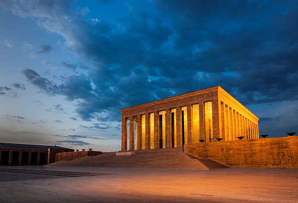

Ankara seyahatlerinin en anlamlı durağı şüphesiz Anıtkabir'dir. İster resmi bir heyetle, ister ailenizle gelin, Anıtkabir ziyareti planlama gerektiren bir süreçtir. Özellikle Tandoğan ve Anıttepe girişlerindeki otopark yoğunluğu, ziyaretçiler için zaman kaybı yaratabilmektedir.
Anıtkabir, yılın her günü ziyarete açıktır. Genellikle 09:00 - 17:00 saatleri arasında ziyaret edilebilir. Ancak resmi bayramlarda ve özel protokol günlerinde bu saatler esneklik gösterebilir.
VipTrip olarak, sizi otelinizden veya Esenboğa Havalimanı'ndan alıp, Anıtkabir'in en yakın protokol giriş noktasına kadar bırakıyoruz. Siz Ata'mızı ziyaret ederken, şoförünüz sizi bekliyor olacak.
Ziyaretiniz bittiğinde ise hiç beklemeden aracınıza binip bir sonraki rotanıza (Çankaya, Kızılay veya Havalimanı) geçebilirsiniz. Park sorunuyla uğraşmanıza gerek kalmaz.
Şoförlü araç ile Ankara'nın önemli noktalarını tek günde gezebilirsiniz:
Mercedes Vito veya S-Class araçlarımızla tam gün Ankara turu için fiyat alın.